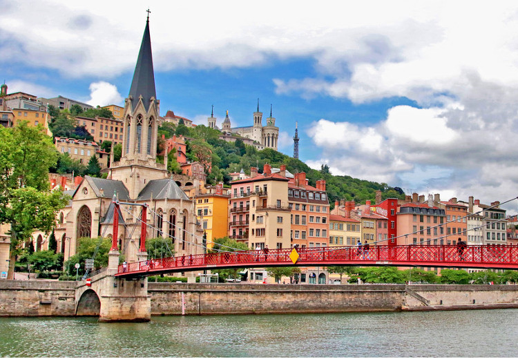

Bonjour et bienvenue sur mon profil !
Je m'appelle Alix Confavreux. J'ai 18 ans. J'ai intégré en septembre dernier le BBA de l'ESSEC, sur le campus de Cergy. Curieuse, je m’intéresse à l’art, aux autres cultures et modes de vie, aux objectifs de développement durable de l’ONU. La pratique de divers sports (tennis, badminton, run and bike, aviron, ski et voile) m’a donné le goût des challenges et l’envie de relever des défis. A l'avenir, je souhaite travailler à l'international. C'est pourquoi, je me réjouis de pouvoir partir en échange universitaire dès la troisième année et de rencontrer au quotidien des élèves venus du monde entier.

Ma ville natale
Je suis née et j'ai grandi à Lyon. J'aime beaucoup le quartier du Vieux-Lyon avec ses immeubles colorés et la presque-île pour ses immeubles anciens. Le parc de la tête d'Or est un écrin de verdure au coeur de la ville. Chaque 8 décembre, la ville est éclairée par des centaines de milliers de lampions. C'est une fête magique.
Mes associations
-
Europa Donna
De 2019 à 2021, j’ai été bénévole au sein de l’association internationale de lutte contre le cancer du sein Europa Donna. J’ai ainsi participé à l’organisation de plusieurs évènements caritatifs à destination des patientes : ventes aux enchères caritatives dans les salons de l'hôtel de ville Louis Pradel, vente de savons et de chocolats lors d'octobre rose et ateliers d'estime de soi. Europa Donna
-
Cheer Up Essec
En septembre dernier, j’ai intégré le pôle events de l’association étudiante Cheer Up ESSEC à destination des jeunes en rémission d’un cancer. Je participe à l’organisation du programme Rebonds. J’ai ici une double mission : contacter les hôpitaux pour proposer le programme aux patients et démarcher les fondations pour obtenir des dons. J’utilise Excel pour mettre à jour régulièrement l’avancement de nos recherches et Zoom lors des réunions d’équipe. J’aime ce travail collaboratif qui demande de la persévérance. Fédération Cheer Up
-
Club Aviron Essec
Je m'entraîne deux à trois fois par semaine sur les étangs de Cergy. Ce que j'aime au club d'aviron, c'est que nous soyons tous de programmes différents (AST, PGE, BBA). J'aime écouter les anecdotes de chacun : un stage chez Louboutin aux USA, une césure en Nouvelle-Zélande, des études de santé ou d'économie... C'est très enrichissant ! Club Aviron Essec
Ma compétition
Le Club Aviron Essec est le plus médaillé de l'école. Nous participons à plusieurs compétitions universitaires pendant la saison et nous organisons le Trophée des Rois, une compétition rassemblant sur une journée près de 300 rameurs sur le Grand Canal du Château de Versailles en juin. J'ai hâte d'y participer pour me confronter aux équipes des autres grandes écoles de commerce et d'ingénieur (HEC, X, ESCP, ENS, Centrale...) et pour ramer dans un cadre somptueux !
After movie Trophée des RoisMa destination de vacances
Chaque été, depuis que je suis enfant, je pars à Saint Cast sur la côte d'émeraude, en Bretagne. C'est une station balnéaire à taille humaine. J'aime Saint Cast pour les glaces de chez Tinou, pour notre maison vue mer, pour le club des Goélands, pour les séances de voile en famille, pour les matchs de volley sur la plage, pour le marché, pour le lever du soleil sur l'océan et pour les hortensias dans les jardins.